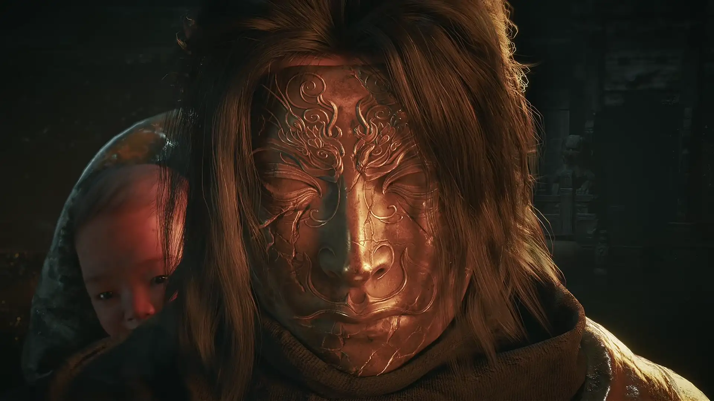
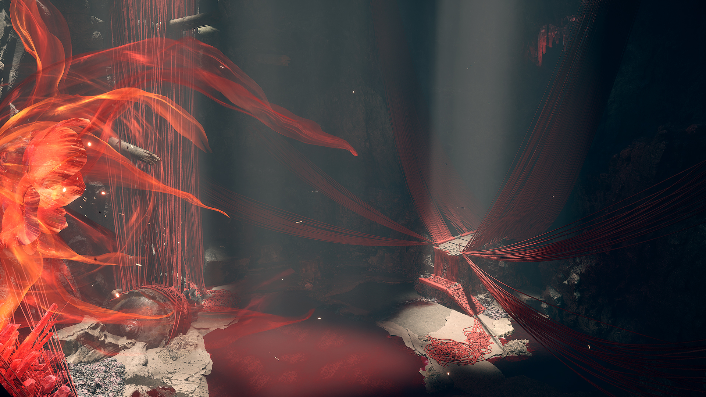
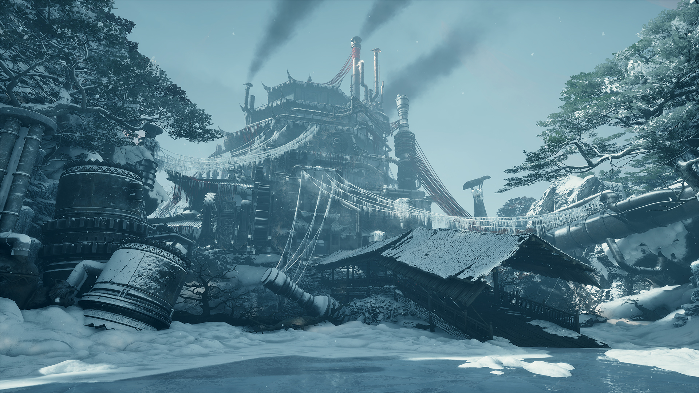
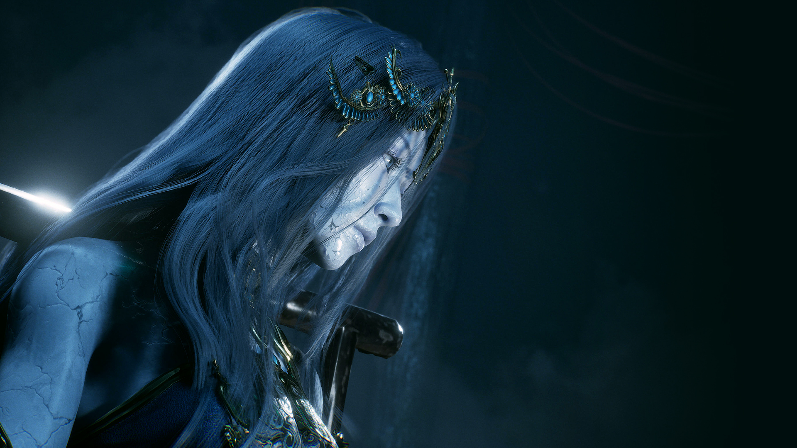
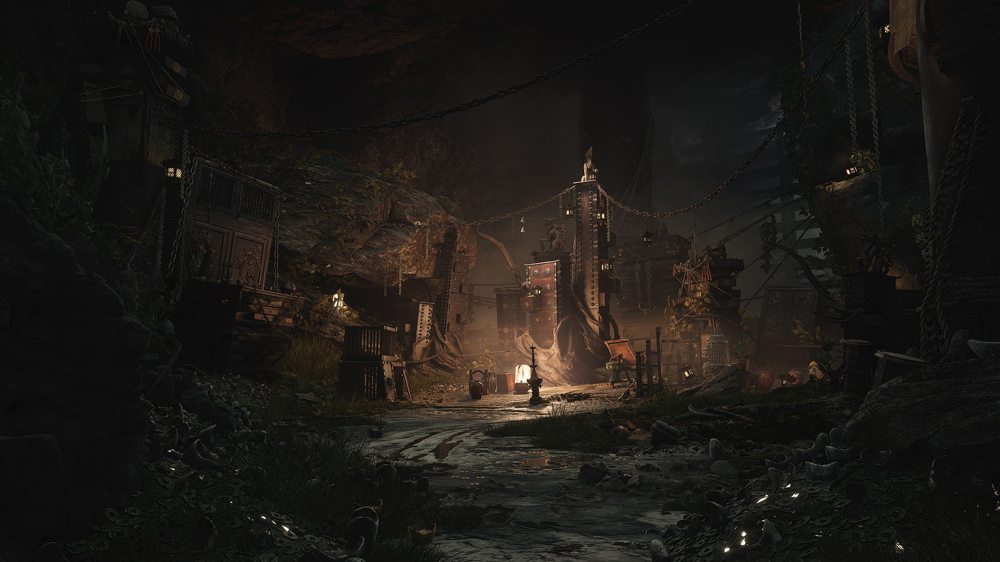
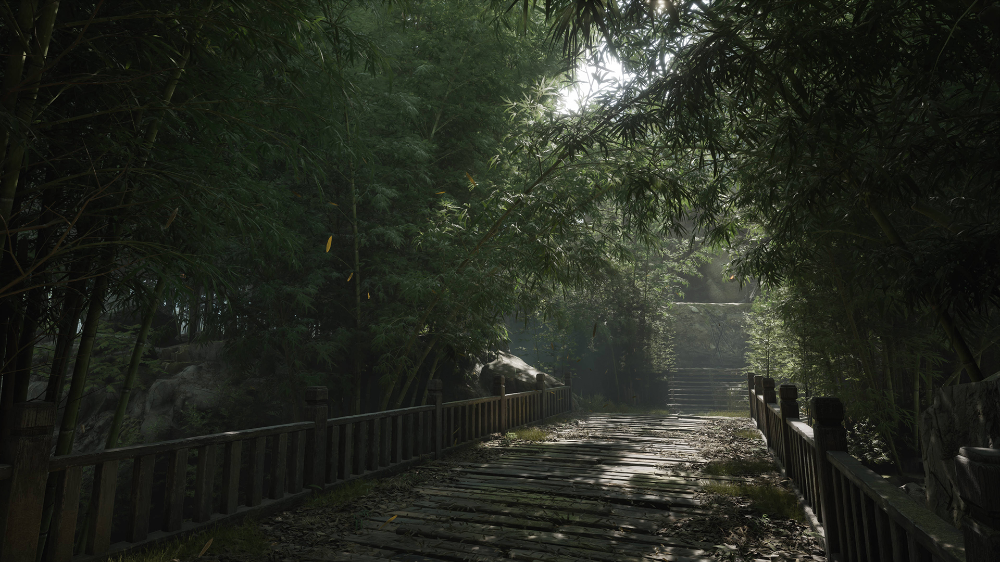

Phantom Blade Zero is out now. S-GAME lists its worldwide release as October 29, 2026 for PC and PlayStation 5. In the US, the simultaneous launch fell on October 28 at 7:00 p.m. PDT, which explains why Steam displays October 28. The game can now be purchased and played. Source: S-GAME; Steam.
Platforms: PS5 (including PS5 Pro enhancements) and Windows PC via Steam and the Epic Games Store. No PS4, Xbox, or Nintendo Switch edition is listed or announced as of November 9, 2026. US prices: Standard $59.99; Digital Deluxe $69.99 on both PC (Steam) and PS5. Deluxe includes two exclusive outfits, a digital artbook, and a soundtrack. Pre-order bonuses were early unlocks, not a separately sold edition. PlayStation Store; Steam; S-GAME.
Performance and downloads: Official PC storage requirement: 145 GB on an SSD. A 134.857 GB PS5 install size has been reported from PlayStation store backend tracking but is not stated on the public Sony store page. PS5 Pro Enhanced is explicitly listed. The game is single-player, so multiplayer cross-play does not apply; cross-save between PC and PS5 has not been officially confirmed. Steam; PlayStation Store; PS5 size report (secondary).

Official global launch: October 29, 2026; US Pacific time: October 28 at 7 p.m. PDT. Art: official key art (pbz.s-game.cn, retrieved 2026-11-09).
Release timeline: from first reveal to launch day
S-GAME's official dated announcements establish the reveal, 2024 in-person demo tour, June 2026 delay, August pre-orders, and November patch. The 2024 demo tour was playable at events, not a publicly downloadable Steam or PS5 demo.
| Date | Milestone | Source |
|---|---|---|
| 2023-05-24 | First announcement trailer at PlayStation Showcase 2023 | S-GAME announcement |
| 2024-06-07 | World Tour hands-on demo announced at Summer Game Fest; later shown to event attendees, not released as a public download | S-GAME gameplay / demo-tour announcement |
| 2026-06-02 | Release revised from September 9 to October 29, 2026 | S-GAME director's letter |
| 2026-08-12 | Pre-orders open on PS5, Steam, and Epic Games Store; official PC requirements also published | S-GAME pre-order announcement; PC requirements |
| 2026-10-29 | Worldwide launch on PC and PS5 (October 28 in US Pacific time) | S-GAME official website; PlayStation Store |
| 2026-11-03 | Documented post-launch update, version 1.0302256, with performance, control, audio, combat and bug fixes | Official patch notes |
The game was reviewed before launch, and Metacritic score snapshots should not be used as evidence that a game was already purchasable; the publisher and live stores confirm availability. No separately priced story expansion or season pass is listed on Steam as of November 9; the listed $10.00 add-on is the Deluxe Edition Upgrade. Source: Steam.

The main timeline milestones are dated using official S-GAME announcements. Art: official environment art (pbz.s-game.cn, retrieved 2026-11-09).
Platforms and versions
Windows PC and PlayStation 5 are the confirmed released platforms; the PC game is available through Steam and the Epic Games Store. Lack of a listed PS4, Xbox, or Switch edition is not a guarantee that a port could never be announced in the future.
| Platform | Supported | Notes |
|---|---|---|
| PC (Windows) | Yes | Available on Steam and Epic Games Store. |
| PlayStation 5 | Yes | Digital edition available now; PS5 Pro Enhanced is explicitly listed. PS5 physical Standard, Deluxe, and Ultimate editions were announced for 2027, with exact release dates/prices not yet given. Sony; Physical-edition announcement report. |
| PlayStation 4 | No announced version | No PS4 version listed on official game / store pages as of 2026-11-09. |
| Xbox Series X|S | No announced version | No Xbox release or port date announced as of 2026-11-09. |
| Nintendo Switch / Switch 2 | No announced version | No Nintendo console release announced as of 2026-11-09. |

Confirmed launch platforms: Windows PC and PlayStation 5. PS5 Pro Enhanced support is listed by Sony. Art: official environment art (pbz.s-game.cn, retrieved 2026-11-09).
What each edition includes
There are two digital editions, with the same base game content. The Deluxe Edition adds cosmetics and digital extras, not a confirmed story expansion. PlayStation official edition comparison.
- Standard Edition ($59.99 US) — full base game only; pre-ordering also offered early unlocks of the Treasure Basin accessory and Legacy outfit.
- Digital Deluxe Edition ($69.99 US) — base game plus Wulin Legend outfit, Blood-Steel Form outfit, Digital Artbook, and Digital Soundtrack (OST). There is no announced story DLC or season pass included in this bundle.
- Pre-order bonuses (not a third edition) — Treasure Basin accessory (10% increased Remnant Dust drop rate) and Legacy outfit, both available through in-game progression without the early unlock. Sony and S-GAME list these as pre-order incentives, so do not assume new post-launch purchases still receive the early unlock. PlayStation bonus details.
- Digital Deluxe Upgrade ($10.00 US on Steam) — for owners of the Standard Edition who want the Deluxe extras; this is not a story expansion. Steam add-on listing.
For players who want only the game, the standard version contains the full story. The $10 Deluxe premium buys two outfits and two digital media extras.

Digital Deluxe adds two outfits, a digital artbook and a digital soundtrack; it does not contain an announced story expansion. Art: official character art (pbz.s-game.cn, retrieved 2026-11-09).
Price by edition and platform
Verified US-region list prices in USD, checked 2026-11-09. Other currencies, regional taxes and active promotions can differ. The 2027 physical editions have no confirmed US prices in the cited announcement.
| Edition | Platform | Price (USD, US store) | Notes |
|---|---|---|---|
| Standard | PC (Steam) | $59.99 | Base game; also listed on Epic Games Store at $59.99 |
| Standard | PS5 digital | $59.99 | PS5 physical Standard Edition planned for 2027; physical price not announced |
| Digital Deluxe | PC (Steam) | $69.99 | Base game + two outfits + artbook + OST |
| Digital Deluxe | PS5 digital | $69.99 | Base game + two outfits + artbook + OST |
| Deluxe Upgrade | PC (Steam) | $10.00 | Requires Standard Edition ownership; optional extras, not new story content |
| Pre-order early-unlock bonus | PC / PS5 | $0 as a separate line item | Was tied to qualifying pre-orders; items also obtainable by playing; post-launch early-unlock eligibility is not confirmed |
Sources: Steam US storefront, PlayStation US storefront, Epic Games Store. Prices may change.

US digital list prices: $59.99 Standard, $69.99 Deluxe; optional Steam Deluxe upgrade $10.00. Art: official environment art (pbz.s-game.cn, retrieved 2026-11-09).
PS5 Pro support and PC requirements
PS5 Pro Enhanced: Yes. The PlayStation Store explicitly labels the game PS5 Pro Enhanced. Reports from launch testing describe 30 FPS Quality, 40 FPS Balanced and 60 FPS Performance targets on PS5 Pro, with a ray-tracing option; actual frame rates depend on scene and display. Sony; Game Informer mode testing.
S-GAME published the following PC requirements on August 12, 2026. Steam's live store listing also specifies 145 GB of available SSD space for both tiers. Both target frame rates below assume upscaling enabled.
| Component | Minimum (1080p / 30 FPS) | Recommended (1440p / 60 FPS) |
|---|---|---|
| OS | Windows 10/11 64-bit | Windows 10/11 64-bit |
| CPU | Intel Core i7-8700K / AMD Ryzen 5 3600 | Intel Core i5-10600K / AMD Ryzen 5 5600X |
| GPU | NVIDIA GTX 1660 6 GB / AMD RX 5500 XT 8 GB | NVIDIA RTX 3060 Ti 8 GB / AMD RX 6700 XT 12 GB |
| Memory | 16 GB RAM | 16 GB RAM |
| Storage | 145 GB available; SSD required | 145 GB available; SSD required |
DirectX 12 is required. Additional official GPU guidance: ray tracing at 1080p/60 FPS with upscaling recommends an RTX 5060 8 GB; path tracing at 2160p/60 FPS with upscaling recommends an RTX 5080 16 GB. Official S-GAME specifications; Steam storage listing.
Official gameplay footage. Performance targets vary by mode and hardware: 1080p/30 FPS minimum spec, 1440p/60 FPS recommended, both with upscaling. Footage: pbz.s-game.cn, retrieved 2026-11-09.

PC storage: 145 GB available on an SSD. Recommended performance target: 1440p at 60 FPS with upscaling. Art: official environment art (pbz.s-game.cn, retrieved 2026-11-09).
Frequently asked questions
Is Phantom Blade Zero out now?
Yes. S-GAME's worldwide release date was October 29, 2026 for PS5 and PC, corresponding to October 28, 2026, at 7 p.m. PDT in US Pacific time. It is available for purchase now. S-GAME; Steam.
Is Phantom Blade Zero on PS4?
No PS4 version is listed or announced as of November 9, 2026. The confirmed PlayStation release is for PS5, including PS5 Pro enhancements. PlayStation Store.
Is Phantom Blade Zero cross-platform?
It is sold on both PC and PS5, but it is a single-player game, so there is no multiplayer cross-play to use. PC-to-PS5 cross-save is not advertised or confirmed on the official store pages reviewed. Steam Cloud support concerns the Steam ecosystem and does not establish PS5 cross-save. Steam; PlayStation Store.
How big is the download?
For PC, the publisher's pre-load notice states the game is approximately 145 GB, and Steam requires 145 GB of available SSD space. S-GAME advised reserving 300 GB free temporarily during PC pre-load; that is not the permanent install size. For PS5, 134.857 GB is a reported PlayStation backend install size, not a number directly published on the public Sony store page. Patches can change storage needs. Official Steam news; Steam; PS5 size report (secondary).
Is there a free downloadable demo?
No free public PS5, Steam or Epic Games Store demo is listed in the store pages checked on November 9, 2026. The official June 7, 2024 World Tour demo announcement covered in-person event builds, not a public download. S-GAME; Steam.
Review scores: dated snapshot
Steam's live game page displays a PC Metacritic score of 88/100. A separately dated secondary-source audit on November 2, 2026 recorded PC 88/100 from 46 critic reviews and PS5 87/100 from 42 critic reviews. Treat these counts as a November 2 snapshot rather than a November 9 total: Metacritic adds outlets after launch, so both the scores and the review counts can still move. Steam's embedded PC Metascore; November 2 score audit (secondary); Metacritic game page.